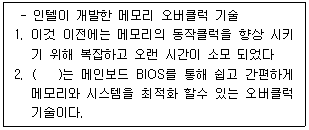
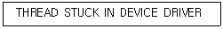
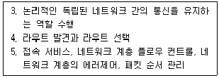

PC정비사-2급 (2022-05-22 기출문제)
1과목: PC유지보수
1. windows 10 pro에서 기본적으로 제공하는 완전한 디스크 암호화 기능으로 볼륨 전체에 암호화를 제공함으로써 자료를 보호할 수 있도록 하는 기능은?
- 비트락커(Bitlocker)
- 비트맵(Bitmap)
- 하이퍼 링크(Hyper Link)
- 벡터 그래픽(Vector Graphic)
(정답률: 89%)

2. 다음 중 Windows 10 실행창에서 수행되지 않는 명령어는 무엇인가?
- msconfig.exe
- iexplorer.exe
- regedit.exe
- timedate.cpl
(정답률: 79%)
3. Windows에서 시작프로그램 폴더를 설정하기 위한 실행 명령어는?
- shell:startup
- startup:shell
- startup:
- :startup
(정답률: 70%)
4. Windows 10에서 기본적으로 지원하지 않는 파일 시스템은?
- EXT2
- FAT32
- NTFS
- CDFS
(정답률: 67%)
5. 프로세스 스케줄링의 종류가 아닌 것은?
- Round Robin
- FIFO(First In First Out)
- Semaphore
- Shortest Job First
(정답률: 68%)
6. 운영체제에서 발생하는 Interrupt에 대한 설명 중 잘못된 것은?
- 어떤 프로세스에게 주어진 시간 할당량이 종료했을 경우
- 어떤 하드웨어에 오류가 발생한 경우
- 어떤 프로세스가 입출력을 위한 시스템 호출을 한 경우
- 어떤 프로세스가 시스템 내부의 다른 프로세스로부터 메시지를 받는 경우
(정답률: 67%)
7. 태블릿PC에서 사용되는 OS의 종류가 아닌 것은?
- WebOS
- Windows 10
- iOS 14.5.1
- Solaris
(정답률: 72%)
8. 리눅스에서 'test'라고 하는 파일 내에 'ICQA'라는 단어를 찾기 위한 명령은?
- grep test ICQA
- grep ICQA test
- find -name ICQA test
- find -name test ICQA
(정답률: 72%)
9. Windows 10 Pro 64비트에 대한 설명으로 올바른 것은?
- 32비트 전용 CPU에도 64비트 운영체제를 설치할 수 있다.
- 64비트 시스템을 꾸미기 위해서 메인보드, 그래픽 카드, 하드디스크 등 모든 하드웨어가 64비트용 이어야 한다.
- 기존의 32비트 장치 드라이버 파일을 그대로 사용할 수 있다.
- 4GB 이상의 물리적 램을 100% 사용하려면 64비트의 설치가 필수적이다.
(정답률: 74%)
10. 언어 번역 과정 중 원시 프로그램(Source Program)을 컴파일하고 기계어로 번역한 뒤 링킹 과정을 거쳐 로더(Loader)에 의해 로드 모듈 프로그램을 주기억 장치로 옮겨서 실행하도록 한다. 다음 중 로더의 기능이 아닌 것은 무엇인가?
- 할당 (Allocation)
- 연결 (Linking)
- 재배치 (Relocation)
- 번역 (Translator)
(정답률: 62%)
11. 별도의 패리티 연산 전용 프로세서와 메모리를 요구하며 멤버 디스크에 돌아가면서 순환적으로 데이터를 저장해 입출력 병목현상을 해결해 읽기 작업 시 분산된 리소스를 불러들여 큰 속도 향상을 보이는 방식의 RAID는?
- RAID 0
- RAID 1
- RAID 3
- RAID 5
(정답률: 58%)
12. 다음 중 Windows 10의 명령 프롬프트에서 제어판을 실행하기 위한 명령어로 알맞은 것은?
- control.msc
- control.exe
- setup.msc
- setup.exe
(정답률: 75%)
13. 다음 중 Windows 10 에서 언어 설정을 변경하려면 설정 항목 중 어느 것을 선택해야 하는가?
- 앱
- 접근성
- 개인 설정
- 시간 및 언어
(정답률: 71%)
14. 다음 중 Windows 10 사용자가 듀얼모니터 또는 빔 프로젝터와 연결하고 복제, 확장 등의 기능을 빠르게 사용하기 위한 단축키는 무엇인가?
- 윈도우 로고 키 + P
- 윈도우 로고 키 + S
- 윈도우 로고 키 + E
- 윈도우 로고 키 + R
(정답률: 80%)
15. 리눅스 명령을 이용하여 ICQA 디렉터리와 그 하위 디렉터리까지 모든 파일을 메시지없이 강제로 삭제하기 위한 명령은?
- rm –i ICQA
- rm –ir ICQA
- rm –rf ICQA
- rm -ra ICQA
(정답률: 78%)
2과목: PC운영체제
16. 데이터를 전송할 때 오류 발생을 막아 시스템의 안정성을 높이기 위해 사용하는 메모리는 무엇인가?
- 언버퍼드 메모리
- ECC메모리
- 레지스터드 메모리
- RAD 메모리
(정답률: 59%)
17. 애플과 인텔이 만든 새로운 고속 인터페이스로 USB 3.0 규격보다 두배 이상 빠른 데이터 전송 속도(10Gbps/s)를 가지고 모니터도 연결 지원되는 새로운 포트는 무엇인가?
- 썬더볼트
- 디스플레이 포트
- HDMI
- DVI
(정답률: 66%)
18. 컴퓨터 모니터에 연결가능한 인터페이스 중 영상과 음성을 모두 전송할 수 없는 것은?
- HDMi
- DisplayPort
- Thunderbolt
- D-Sub
(정답률: 64%)
19. 다음 중 규격에 따른 메인보드의 종류가 아닌 것은?
- Mini-iTX
- ATX
- BTX
- PCI
(정답률: 67%)
20. 전기적으로 정보를 기록할 수 있을 뿐 아니라, 자외선을 비춰서 정보를 지울 수도 있는 ROM은?
- PROM
- EPROM
- Mask ROM
- EEPROM
(정답률: 75%)
21. 주기억장치인 RAM에 대한 설명 중 틀린 것은?
- 전원 공급이 끊기면 기억된 내용을 잃어버리는 휘발성 메모리이다
- 각종 프로그램이나 운영체제 및 사용자가 작성한 문서 등을 불러와 작업할 수 있게 하는 공간이다
- 동적 램은 기억한 내용을 유지하기 위해 주기적으로 재충전이 필요하다
- 정적 램은 대용량을 기억하기에 적합하다
(정답률: 48%)
22. 그래픽카드의 GPU(Graphic Processing Unit)가 병렬처리 프로세서로 널리 보급되는 주요 계기가 된 것은 다음 중 무엇인가?
- 마이크로 프로그래밍
- 그래픽 API
- JAVA 프로그래밍 언어
- CUDA 프로그래밍 모델
(정답률: 44%)
23. 다음은 무엇을 설명한 것인가?

- XMP
- CCX
- MTBF
- TBW
(정답률: 54%)
24. 자기(Magnetism)를 사용하여 저장하는 방식이 아닌 장치는?
- FDD
- Zip Drive
- Blu-ray
- HDD
(정답률: 59%)
25. USB에 관한 설명 중 올바른 것은?
- USB로 연결된 모든 기기는 전원을 별도로 공급해야 한다.
- USB는 한 개의 콘트롤러에 최대 16개의 디바이스 장착이 가능하다.
- USB 3.0의 경우 최대속도가 FIR(Fast InfraRed)와 동일한 400MB이다.
- USB 3.0의 외장 하드디스크를 컴퓨터 USB 2.0 포트에 연결하여 사용가능하며 이 경우 낮은 2.0 버전의 성능으로 동기화 된다.
(정답률: 70%)
26. 모니터 관련 용어에 대한 설명으로 잘못된 것은?
- Dot Pitch - 우리말로는 망점이라 부르며, 수치가 클수록 선명한 영상을 구현한다.
- VESA 홀 - 모니터를 벽이나 스탠드에 걸 수 있는 뒷면 나사구멍 사이의 국제규격이다.
- 픽셀(Pixel) - 픽셀은 이미지의 해상도를 나타낼 때 사용되는 단위이다.
- 화면 크기 - 물리적인 화면크기는 인치(Inch) 또는 센티미터(cm)로 표시한다.
(정답률: 62%)
27. 전기적인 힘을 가하여 발생하는 기포를 작은 노즐을 이용하여 종이위에 뿌려 문자나 그림을 출력하는 프린터는?
- 잉크젯 프린터
- 도트 프린터
- 레이저 프린터
- 펜 플로터
(정답률: 75%)
28. 물체에 비추어 반사된 빛을 전기 신호로 바꾸어 컴퓨터가 인식할 수 있는 디지털 신호로 바꾸는 장치는?
- 프린터
- 스캐너
- 모니터
- VGA
(정답률: 73%)
29. Memory에 기억된 Data의 유지를 위해 주기적으로 재충전하는 신호는?
- Timer
- Reset
- Refresh
- Strobe
(정답률: 72%)
30. 데이터와 전력의 전송을 허용하는 24핀 단자이며, 상하 대칭형태로 어느 방향으로도 연결할 수 있는 USB 단자는 무엇인가?
- USB Type-A
- USB Type-B
- USB Type-C
- USB Type-D
(정답률: 74%)
3과목: PC주변기기
31. 같은 공간에 있는 여러 사용자의 PC들 중 하나의 PC에서 랜섬웨어가 탐지되는 경우 가장 먼저 조치해야 되는 사항은?
- 랜섬웨어가 탐지된 PC를 네트워크에서 분리
- 랜섬웨어가 탐지된 PC에서 바이러스 백신 검사 수행
- 랜섬웨어가 탐지된 PC를 백업 및 복원을 수행
- 랜섬웨어가 탐지된 PC의 최종 사용자 교육
(정답률: 62%)
32. UEFI 바이오스가 지원하는 이것은 파티션 테이블 크기를 확장하여 디스크 하나에 주 파티션을 128개 만들 수 있으며, 주소 체계를 64비트로 확장해 이론적으로 최대 8ZB까지 지원할 수 있는 이것은 무엇인가?
- MBR
- WHQL
- GPT
- TDP
(정답률: 75%)
33. Windows 10 사용 중 보기와 같은 블루스크린 오류 메시지가 나타났을 시 해결방법은 무엇인가?

- ODD 드라이버 업데이트
- 그래픽 카드 드라이버 업데이트
- 사운드 카드 드라이버 업데이트
- 하드디스크 드라이버 업데이트
(정답률: 68%)
34. 컴퓨터 부팅 중에 [BIOS Check Sum Error] 메시지가 출력되었을 때 이를 해결하는 방법은?
- 메인보드의 배터리를 교체한다.
- 키보드 커넥터를 확인한다.
- 메인 메모리를 교체한다.
- CPU를 교체한다.
(정답률: 72%)
35. 컴퓨터를 부팅하자마자 'Press [F1] to continue'라는 메시지가 모니터에 나타난다. 그 원인으로 올바른 것은?
- 키보드 혹은 마우스 연결 불량
- CMOS의 그래픽 카드 설정 오류
- ROM BIOS 고장
- 캐시 메모리 불량
(정답률: 61%)
36. 리눅스 파티션의 종류가 아닌 것은?
- Primary 파티션
- Extended 파티션
- Logical 파티션
- Physical 파티션
(정답률: 46%)
37. 전자파에 관련된 인증 마크가 아닌 것은?
- EMC
- FCC
- CE
- KGMP
(정답률: 60%)
38. 오버클럭킹에 대한 일반적인 설명 중 잘못된 것은?
- CPU의 클럭 설정은 점퍼 비율 딥스위치를 조정하거나 BIOS SETUP에서 설정할 수 있다.
- 오버클럭킹을 사용하게 되면 CPU의 온도가 오버클럭킹 을 하기전보다 높아지므로 주의한다.
- 오버클럭킹에는 외부 클럭을 올리는 방법과 클럭 배수를 올리는 방법이 있다.
- 메인보드에서 지원하는 클럭 수 보다 높게 오버클럭킹이 가능하다.
(정답률: 53%)
39. 컴퓨터 부팅시에 보안을 위해 비밀번호를 사용하기 위한 바이오스 설정 메뉴와 값으로 옳은 것은?
- Password on Boot "Enabled"
- Password on Windows "Enabled"
- Password on Boot "Disabled"
- Password on Windows "Disabled"
(정답률: 52%)
40. 플러그 앤 플레이(Plug & Play)의 기능이 아닌 것은?
- 하드디스크 자동 포맷
- 하드웨어 인터럽트 자동 설정
- I/O 어드레스 자동 설정
- 새로운 하드웨어 자동 설치
(정답률: 60%)
41. 메인보드에는 케이스에 장착되어 있는 여러 종류의 스위치와 램프의 커넥터들이 연결된다. 이 중에서 극성을 무시하고 커넥터를 연결해도 정상적으로 동작하는 것들은?
- 리셋스위치, 전원스위치
- 리셋스위치, 전원표시 LED
- 스피커, 전원표시 LED
- 스피커, 하드디스크 LED
(정답률: 64%)
42. 컴퓨터를 장시간 사용함으로 인해서 생기는 질환을 의미하는 것은?
- TCO
- VDTs
- VLF
- EMI
(정답률: 52%)
43. 텍스트 위주의 기존 바이오스는 초보자가 설정하기 어려웠지만 그래픽과 아이콘 등 시각 효과 위주로 구성해 다루기가 쉬운 바이오스를 뜻하는 용어는?
- GOOD 바이오스
- CUI 바이오스
- UEFI 바이오스
- HEY 바이오스
(정답률: 70%)
44. PC조립 중 메모리 장착하는 방법으로 옳지 않은 것은?
- 메모리 슬롯과 메모리를 홀에 맞추어 끼우고, 메모리 슬롯 양쪽 고정 레버를 위로 젖혀 올려 준다.
- 메인보드의 메모리 슬롯의 빈 자리가 없도록 메모리를 장착해야 컴퓨터 부팅이 가능하다.
- 메모리가 메모리 슬롯에 정확하게 장착되면 딸각 소리가 나고 메모리 옆면의 홈에 레버가 맞물리게 된다.
- 방향이 맞지 않으면 레버에 맞물리지 않게 되므로 확인하고 다시 장착한다.
(정답률: 62%)
45. 컴퓨터를 조립 및 분해하는 과정에서 주의할 사항이 아닌 것은?
- 컴퓨터의 모든 커넥터는 반대로 연결 할 경우 들어가지 않으므로 방향을 확인 할 필요가 없다.
- 정전기의 발생을 조심하여야 한다.
- 잘 모르는 것이 있으면 반드시 매뉴얼을 참고하여야 한다.
- 조립과 분해를 할 경우 주위를 정리하면서 하는 것이 도움이 된다.
(정답률: 63%)
4과목: PC네트워크
46. 동일한 인증을 받은 제품끼리 유/무선 네트워크로 미디어 콘텐츠(사진/음악/동영상)를 공유하고 재생할 수 있는 기술은 무엇인가?
- 스트리밍
- DLNA
- 와이파이
- 클라우드
(정답률: 41%)
47. TCP/IP의 네 가지 요소의 설명으로 바르지 않은 것은?
- IP Address : 자원을 식별하기 위한 고유 주소
- Subnet Mask : 네트워크 단위를 식별하기 위한 주소
- Gateway : 외부 네트워크에서 들어오기 위한 장비 주소
- DNS : 도메인 네임을 IP Address로 풀이해 주는 서버 주소
(정답률: 70%)
48. 유선 이더넷 환경에서 동시에 데이터를 전송할 경우 충돌이 일어나게 된다. 다음 중 이렇게 발생한 충돌을 감지하여 이후에 비어 있는 채널을 재사용하게 하는 방식은 무엇인가?
- FDDI
- Token-bus
- CSMA/CA
- CSMA/CD
(정답률: 36%)
49. 다음 설명으로 알맞은 것은? (OSI 7 계층 기준)

- 전송 계층
- 네트워크 계층
- 세션 계층
- 데이터 링크 계층
(정답률: 55%)
50. 다음 UTP 케이블의 종류 및 규격에 대한 설명 중 틀린 것은?
- Category 5 : 속도 100Mbps, 대역폭 100MHz
- Category 5E : 속도 1Gbps, 대역폭 100MHz
- Category 6 : 속도 1Gbps, 대역폭 250MHz
- Category 7 : 속도 1Gbps, 대역폭 600MHz
(정답률: 66%)